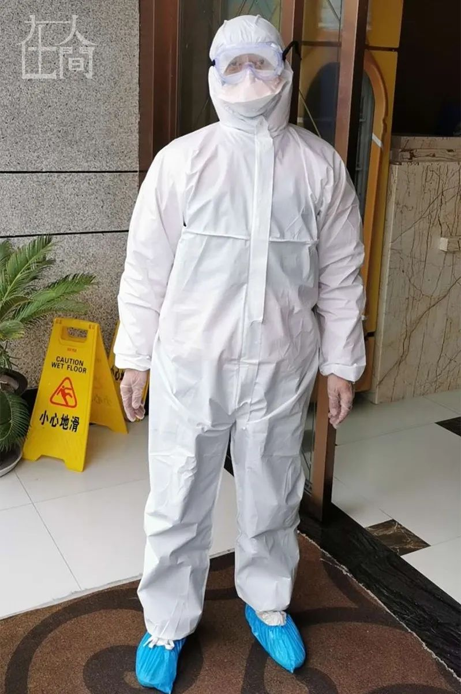

武汉封城后，我每天坐志愿者的车上下班
原文链接 备份链接 “ - 疫 情 之 下 - 武汉的疫情就像一簇紧簇的乌云，笼罩在每一个人的心头。但所幸，在这个受伤的城市中，在每台志愿者车里，在疲于奔波的路上，总有那么一群可爱的人，温暖着我们前线医护工作者的心。 ” 1 2020年 …


凤凰新闻客户端 凤凰网在人间工作室出品
打开凤凰新闻客户端，搜索「在人间」并关注，阅读更多疫区故事
2月26日，新近应募到武汉市洪山区一家出院隔离点和养老院担任防疫社工的郑小仙，刚刚穿着防护服把一位老人抬上车送去隔离点，接到了方圆母亲的电话，得知她已经和男友一起回到武汉，住在一家旅店里，打算在疫情减退以后和郑小仙会面，一起筹划方圆的未来。
郑小仙犹豫着怎样跟方圆提及这个喜忧参半的消息。此前的聊天中，方圆希望母亲回来，但是最好，“是她一个人”。
十五岁的少年方圆父亲入狱，此前和奶奶相依为命。2月上旬，奶奶感染新冠肺炎后，孤苦无告的方圆在网络求援，得到了郑小仙和其他志愿者的帮助，病势沉重的奶奶得以住进医院。
随着时间推移，两人的关系不再是志愿者和受助人这么简单。这样的关切，在郑小仙和另一位家境困顿的单亲女孩晴晴之间也产生了，奶奶感染新冠病毒在家中猝然去世，把她推到了溺水的境遇中，“感觉他对我来说挺重要的”。
一个月时光过去，他们之间的关切没有随着疫情的减退而消歇。相比于侵蚀肺部的新冠病毒，它在人心中驻扎的力量更为长久。
2月5日傍晚，郑小仙提着消毒液，跟着方圆第一次走进武昌区武车路附近一处老式家属楼底层，屋里的情形让他产生了穿越感。
地上全是旧物，没有一样看得出光泽的东西，缺少成型站立的器具。老式木柜，棕床，煤气单灶，色彩像是事后染上去的电视，每样东西都被时代撂下了几十年。瓷砖地面发黑，郑小仙想要找到一具拖把来拾掇，连换两只都是坏的，郑小仙感到“寒心”。一听生锈的铁罐装的奶粉，显得是家里的好东西，方圆舍不得丢掉，消毒之后仍旧贮存起来。
几乎所有东西都是捡来的，捡破烂是方圆奶奶退休之后的职业，用于贴补不堪敷盖的家用。家境的塌方是由于父亲，方圆出生之初，他就因盗窃等行为入狱，导致了方圆母亲的离开，以后累犯累囚，罪案也逐步加重，眼下正因抢劫在狱中度过剩余八年的刑期。
方圆的爷爷奶奶都是车辆厂的职工，企业的改制导致退休金的微薄，四年前爷爷去世，祖孙仅凭奶奶两千来元的退休金度日，却要每月支出1400多元给身在狱中的方圆父亲缴纳养老保险以及贴补零用。
方圆初中毕业后就读于艺术职校，学习国标舞，学费与日用靠身在远方的母亲补贴，“每年妈妈的钱打来了，我就和奶奶一起去买冬衣”。母亲的职业是底商门面销售，负担儿子的学业勉为其难。
诸般窘迫加上疫情袭击，造就了郑小仙眼前废墟一样的场景。这里还容纳了一户租客，是卧床瘫痪浑身颤抖的母亲，和她年过半百的智障女儿，蹒跚地穿过屋子去上狭小的厕所。
奶奶病倒就医困难之际，方圆在微博发出“我不想奶奶离开我，不想成为孤儿”的呼吁，传到了郑小仙和志愿者同行们的耳中。
同样的情形，两天后郑小仙在二十出头的女孩晴晴的家中再次目睹了。中南医院附近的一处社区里，同样是老旧的工厂家属楼，三楼的房间没有电梯，狭小的两居室“加起来只有我的卧室大”，窗户是木头的，床、家具、电视连二手货都算不上，近乎废品，窄小的卫生间里没有装热水器，全家从喝水到洗漱都靠一把电热水壶。
女孩的母亲也是在晴晴很小的时候出走，父亲长年做保安和代驾，爷爷去世，奶奶身患糖尿病和白内障，长年需打胰岛素续命，微薄的工人退休金堪堪够用。女孩职高毕业后干过网络小贷推销之类的工作，底薪只有千把块钱。
此次疫情中父亲首先感染，住不上院又因居室狭小无法有效隔离，导致奶奶和女孩自己先后感染。郑小仙第二次去晴晴家中当晚，病重的奶奶在痰盂上挣扎解手，猝然栽倒离世，晴晴无力扶起，含传染病毒的大便遍地横流，原本如履薄冰的家境坠入深渊，一时不可收拾。
这和郑小仙自身的境况迥异，却又有某种呼应。郑小仙幼年父母离异，家境产遭遇大起大落，成年后入伍历经不乏艰苦的军营生活，转业到铁路工作后停薪留职、下海创业，再次体会了人生在高峰和低谷之间的落差，最低谷时负债百万，被迫送外卖、开专车和做代驾，干和晴晴父亲一样的职业，一天只吃一碗炒粉。以后在朋友帮衬之下终于还清债务，再度开办酒楼成功，住上了现在三室两厅两卫的大房子，在铁路列车安全员的本职之外构建了生意和人脉，在疫情中自保之余有能力担任志愿者，逆行助人。
遇到方圆和晴晴之前，郑小仙已经参与救助了不少遭遇疫病的家庭和个人，为医护组织捐献和对接了诸多抗疫物资。但两个单亲孩子的处境，和他们身处底层的家庭，使他难于放下，在购买口罩食品、帮助消毒、联络床位、陪护就医之外，还要额外加上一些什么。
他回想起自己入伍那年，到湖北参加1998年抗洪的往事。四下洪水泛滥，尸体漂在水中，无助地浮沉。郑小仙和战友们驾着橡皮舟帮灾民们转移，从屋顶和树梢救出受困呼救的人们，人刚刚离开水头就到，先前栖身的房屋一排排被波浪扑倒，转瞬荡然无存，郑小仙只来得及救出零星几个人。部队在坝顶扎营抢险，身下的坝基四处管涌，如同喷泉，十七岁的郑小仙写下遗书，用两层塑料袋封好扎在胸前衣袋里，做好了自己遇难的准备。
眼前在疫情洪水中面临灭顶之灾的男孩女孩，正像当初在即将沉没的屋顶呼救的灾民，也像待在随时可能崩溃的大堤上的郑小仙自己。
从奶奶大年夜出现咳嗽乏力症状，到上网呼吁“哭求叔叔阿姨帮帮我”“不想奶奶离开我，不想成为孤儿”之前，十多天的时间里，十五岁的方圆一直在竭力支撑，试图搭救奶奶和自己。
无休无止地打电话，只是自救的一小部分。发病以后五天，奶奶开始呼吸困难，方圆跟110说人快不行了，110说没办法，“我崩溃了”。向社区要车带奶奶看病，社区没有，最多只是给个防疫部门电话，上报登记，此后是希望渺茫的等待。
打电话之外，只有几个一次性口罩防护的方圆，走出家门四处为奶奶买药，陪奶奶去医院。发病后四天去铁路医院门诊检查，社区没有车，七十八岁的奶奶是走着去，再走着回家的，路上单趟要一个多小时。奶奶在发热门诊的队列里排了两个多小时，为了避免方圆感染，打发他先回去，找社区反映情况。奶奶回来的路上，方圆一直打电话，终于忍不住半路去接，到家时奶奶满头大汗，晕倒在床，病情眼见恶化，呼吸变得困难。
医院的CT结果出来，没有查出症状，方圆觉得不行，三天后带奶奶去紫荆医院拍片，证实奶奶双肺感染变白，但仍旧没法做核酸确诊，以及入院治疗。两天后奶奶卧床不起，方圆独自跑去紫荆医院要求办理住院，医生告知床位已满，方圆万分不甘心仍旧只能失望回家。
彼时武汉全城正在陷入疫情席卷之中，处于心理叛逆期的方圆能够接受那些实言相告，让他做好心理准备的回复，却对一些成人的敷衍拖延，“把我当小孩打发”，“心里感到有一种恨”。这种无助的恨意，一直延续到志愿者介入的时候。
在家中，奶奶卧床虚脱，大口大口喘息，没有力气说话，严重时二十分钟腹泻一次，方圆照料奶奶服药之外，要冲补液盐给奶奶喝，扶奶奶上厕所，学着煮稀饭给奶奶吃，还给奶奶炒了一顿牛肚，自己则是泡面对付，或是买个包子回来蒸。这些以往从未经历过的事情，一夜之间压到了方圆肩上来。纵使他的身量高出同龄人，也决然超出了瘦弱肩胛承受的极限。
崩溃之余，方圆终于向他一度失去信任的成人世界呼救。还好在一片溺水的求援声之中，他的声音是被听到的那个。发出求助信的第二天，方圆开始接到无数的电话，“两秒钟打进来一个”。99%是无用的信息或者关怀，郑小仙和几位志愿者、记者属于余下的1%。

■ 志愿者郑小仙
外界关注终于促使社区将奶奶送到了中南医院留观室，郑小仙在这里第一次见到了方圆。一直在从事外地援汉物资对接医院的他，受团队之托努力帮方圆奶奶得到一张床位。因为留观室拥挤不堪，方圆在这里有感染风险，郑小仙联络志愿者找车，直到深夜才找到车送方圆回家。不知哪条线最终起了作用，奶奶最终住进了中南医院病房。
第二天郑小仙给方圆带去了N95口罩、手套和消毒液，又带着方圆，拿志愿者捐助的钱去沃尔玛采购生活用品，因为方圆执意要去医院看奶奶送东西，郑小仙又给他找了一身隔离服，陪同前去。在医院并没有见到奶奶，医生把东西接进去，随后郑小仙提着消毒液去了方圆家里，花2个小时把所有用具消过一遍毒，扔掉无用的东西，减少方圆居家受感染的几率。
大体安顿好方圆祖孙的同时，郑小仙接手了晴晴的求助信息。晴晴的爸爸感染之后，一直无法确诊住院，奶奶在1月底发病，因为本身有好几种慢性病，一周之内肺炎变得严重，从最初的干咳乏力到高烧，几乎不能下床移动，频繁腹泻，随时要晴晴搀扶下床坐痰盂解手，奶奶全身无力，坐下和起身全凭晴晴硬撑，几乎无力承受。
爷爷去世之后，晴晴需要长年照料奶奶，每晚八点半以前回家，为奶奶注射胰岛素。晚上和奶奶同床，奶奶半夜会因腿部抽筋疼醒，被同学形容为“雷打不醒”的晴晴，却会感知奶奶稍有的动静，随时为奶奶揉腿。眼下晴晴需要照顾两个大人和自己，吃饭喝水都没有工夫，自己也出现咳嗽和心率加速的症状，又正好赶上拉长的生理期，一家人陷入绝境。
像方圆一样，困在家中的晴晴打了无数个电话，寻找各种信息，求助多个部门，听到的最多两个字就是“要等”，而这时不管是爸爸还是奶奶，都已经等不起了。爸爸高烧到39.8度，对晴晴说感觉自己快不行了，晴晴请求他一定要坚持住，这头又要鼓励奶奶坚持，一定要等到住上医院。
2月5号，郑小仙来到晴晴家中，按照去方圆家的流程，为一家人购买了口罩、消毒液和生活用品，去社区沟通，第二天又给奶奶送去体温枪。晴晴奶奶问能否住上医院，郑小仙回答可以。没想到当天晚上，回家的郑小仙接到了晴晴电话，说奶奶出事了。
晚上奶奶下床解手的时候，她力气不够，没有扶奶奶在痰盂上坐稳，痰盂翻倒，人一下子摔出去，躺在地上，她没有力气扶起，只好给郑小仙打电话。郑小仙让她用手机视频通话，指导晴晴去摸奶奶的颈动脉，一摸之下晴晴的手机摔在地上，奶奶已经没有脉息了。视频画面瞬间错乱，晴晴的哭声和泪容、奶奶的惨象以及满地的粪尿纷杂而来，一时不知人间何世。
郑小仙忍住难过继续和晴晴通话，嘱咐她用旧衣物盖住奶奶身体，一边联络社区开具死亡证明，和殡仪馆安排丧事流程。还好志愿者将晴晴家的信息发布到了疫情网，防疫部门当晚来消毒，运走了奶奶遗体，第二天办理了死亡证，死因注明是长期糖尿病加疑似新冠肺炎，父亲被洪山方舱医院收治。
只有晴晴当晚无处可去，被污染的家中不能再住，无奈之下郑小仙带她去方圆家中借宿了一夜。本身并未感染新冠病毒的方圆，容纳晴晴在奶奶留下的房间过了一夜。第二天在志愿者协调之下，社区终于安排晴晴住进了隔离酒店。
几天以后，随着武汉市清理疑似暨密切接触者的动作铺开，方圆住进了隔离酒店，核酸检测为阴性。家中租住的残疾母女由社区照顾。晴晴则在酒店检测为阳性，被蔡甸方舱医院收治。最无助的时刻总算过去了。

“奶奶死了，我就死”。第一次见到郑小仙，方圆对他这样说。
方圆觉得，自己可以接受奶奶的死亡，但得是一个正常的离去方式，“不是这种没人管，看着她死去，就在我面前”。
郑小仙和志愿者们致力于打消他的念头。“奶奶是希望你好好的，你跟着她走了，她会安心吗？”
方圆和奶奶相处并不融洽。奶奶的脾气暴，打人特别厉害，“我没见过比她更狠的”。直到眼下奶奶打不动方圆了，两人仍然特别特别多吵架。妈妈当初离家，除了爸爸的行径不轨，婆媳不和也是一个原因。但方圆和奶奶的感情又非常好，“无比厚重”。方圆没有父母的概念，母亲从小离家，父亲只在频繁坐牢间隙回来过两次，九岁那年父亲回家待了一周，“又犯罪进去了”。爷爷有癫痫，发作时死去活来，半夜尖叫，咬舌头到流血。奶奶是一家的顶梁柱，方圆不能设想没有她的生活。
为了劝阻方圆想不开的念头，郑小仙讲述了自己一段椎心的经历。37岁的郑小仙尚未结婚，但曾跟女友有过一个未出生的孩子。孩子在母腹中发育不健康，五个月大的时候流产了，处于生意失败低谷中的郑小仙，亲手埋葬了自己的孩子。“叔叔告诉我（他的经历），是想说人要面对很多事情”。
奶奶住院初期，为了分散方圆的焦虑感，在对接各种救援信息和物资的间隙，郑小仙还会抽时间陪他打游戏，作为队友一起在网络上“吃鸡”。从独自居家到住进酒店隔离，两人每晚都会通话，方圆会把自己在家中和酒店做了什么、吃了什么饭发照片报备给郑小仙。
在方圆家借宿那夜，面对为奶奶病危焦急的方圆，晴晴哭着讲了自己奶奶去世的事情，不知是彼此倾诉，或是安慰。
方圆觉得，奶奶虽已年近八旬，但长年捡破烂风雨无阻，身体比一般老人硬朗。但这改变不了奶奶住院一周后升级为危重，被送进ICU病房插管呼吸的现实。医生电话建议最好使用人血白蛋白，但价格高昂，六包需要3480元钱，一位记者发动校友捐助了3000元，郑小仙掏光了身上的衣袋，塞给方圆480块，总算凑齐了钱，又送方圆去医院开了购药证明，第二天买到药之后，社区派车送方圆去了医院送药。以后郑小仙又陪方圆去给奶奶买了纸尿裤，直到武汉禁足令发布。
直到眼下，已经住院20多天的奶奶一直呆在ICU，医生给方圆的说法是，“有好转或者别的消息都会及时通知你”，方圆的心一直悬着，需要郑小仙经常跟他联络聊天，“避免极端想法”。在郑小仙看来，十五岁正是叛逆期，处于心理状况分水岭，“我跟他讲，万一奶奶去世不要有极端想法，假如报复社会，换来的只是痛苦。退一步讲放任自己学坏了，混社会，就是重复父亲的老路”。
在跟方圆妈妈的联络中，郑小仙也嘱咐她“不要用对成人的方式来对待他，避免留下受伤的烙印”。方圆妈妈的命运屡经坎坷，生长在农村，方圆外婆很早去世，外公因为孩子多，把方圆的妈妈送到农村亲戚家抚养，这家不要了又找那家，放学回家直接去田中放牛，十几岁时出门打工，遇到了爸爸，“给一颗糖就跟着走了”，十七岁就生下了方圆，又因为遇人不淑而失望离开。她告诉郑小仙，“你是我人生第一次最信任的人。”
新近失去了奶奶的晴晴，住进隔离酒店后常常失眠，她最难过的是奶奶一直想住院，“能做的我都做了，还是没能让她住上医院”。郑小仙除了在禁足令发布后想法托人捎给她生活用品，更要时常在她情绪低落之际给以安慰。2月12号，晴晴在酒店被确诊感染新冠病毒，心情低落，郑小仙去医院送物资回来后，一直打电话跟她聊天，提到她今后的人生规划：如何适应新工作，恋爱结婚，生孩子……“分散她眼下的注意力”。
面对方圆奶奶生死未卜的病情，如何安排他今后的道路，是郑小仙关心的主要问题，尽管这远远超出了他起初的志愿者身份。他觉得方圆眼下读的国标舞专业并不靠谱。跳舞需要自幼训练的基本功，艺术教育的现状又是学生在大课上学到的东西不多，要深造只有上老师课余开设的小班，收费昂贵，而这对于方圆和妈妈来说是不现实的。去年夏天方圆曾经尝试上了老师的补习班，因为缺钱只上了十天，每节课要交五百至两千元钱。从入学到学成需要很多年时间，方圆不过刚刚开始。郑小仙曾跟方圆的妈妈商量，是否在网络上发动募捐，妈妈拒绝了，说自己能负担，不想给社会添麻烦。
郑小仙建议方圆走自己曾经的路，当兵。借助自己在部队上的关系，他可以帮助方圆铺路，还可以找来两位自己的好友，一起开酒楼的伙伴帮方圆补习文化课，争取入伍后考上军校，超过当年自己士官的前途。
方圆也不喜欢自己就读的学校，包括一起学舞蹈的同学们，“混社会，出口成脏”。对于自己在学习的国标舞专业，他也表示没多大兴趣，也看不出多大前途，但自己练得很苦，不怕累，想一直练下去，将来进更好的学校，考级就业当舞蹈培训老师。虽然这条路要投入很多钱，但他觉得可以撑下来。相比之下，军营中的漫长岁月让他望而生畏，“假如想当上士官，十多年下来，和外界完全隔绝了”。但他也认同郑小仙的建议是好的，适合自己，“就是眼下不大想去”。
相比之下妈妈更认同郑小仙的设想，两人一直在通话中商议入伍的筹划。方圆的身体条件不错，文化课能补上的话，参军的最大一项限制是政审。如果奶奶去世，方圆法定的监护人是正在服刑的父亲，这在政审上显然通不过。只有妈妈回归，是解决这个问题的最好办法，正值青春期的方圆，也显然需要照顾。
另外一个问题是房屋所有权，目前户主写的是父亲，妥当起见，也需要转移到方圆名下，小区历史老旧，几年内就可能面临拆迁，需要早做准备。问题在于，经历这次疫情，不论奶奶在世与否，妈妈都愿意回来，方圆也很盼望她回家，但她的男友成了问题。
“能接受（妈妈带男友回来），但最好妈妈是一个人回来。”方圆说。这成了本文开头郑小仙迟疑的原因。他打算让时间来消化方圆心里的一些东西。
方圆妈妈回武汉之后，郑小仙还打算帮她和做烧烤的男友找工作，在自己经营的酒楼里设一个烧烤吧，让两人安定下来，方圆也可以趁周末来酒楼补习。他也考虑以后让晴晴辞去现在不稳定的保险推销工作，到自己的酒楼里担任助理，在他跟列车出行的时候打理店务。他还在隔离点和养老院保洁、消杀、搬运物资之余抽时间整理了方圆和晴晴的资料，报送给各个群里志愿者介绍的基金会，尝试获得基金资助，支持他们今后的学业和生活。
晴晴住进方舱以后，仍然时常跟郑小仙联系，她在蔡甸方舱里的情形不错，身体症状减退，也得知爸爸的病情在改善。在方舱里，她也开始担任志愿者，帮助护士发放同条病友的一日三餐和中药包，感到愉悦。说到疫情结束以后的生活，她想好好工作赚钱，把以前因为家境和照顾亲人被延搁的人生步骤，一步步拣起来。经过疫情，她还感到自己身体缺乏运动，体格虚胖的缺陷，打算以后好好锻炼。她还想去考驾照，因为从这次疫情中的寸步难行，感到自己能开车的重要性。
2月29日，晴晴两次核酸检测阴性，按照规定走出了蔡甸方舱，去湖北大学隔离。在14天的隔离期结束后，她准备加入郑小仙和其他志愿者的群体，穿上隔离服阻击新冠病毒，为疫情的及早结束尽一份力。
（郑小仙、方圆、晴晴为化名）
更多疫情故事，请点击左下角「阅读原文」。


新型肺炎疫情牵动人心，
《在人间》现面向全国网友征稿：
（一） 疫区影像日记
如果你身处疫区
请你用照片（视频）和文字记录
你所听闻和见到的一切
照片不少于3张
文字不少于300字
投稿方式：微信联系人间君（zairenjianliving）
（二）抗击疫情真实故事
无论你是一线医护人员、志愿者、
确诊或疑似患者及家属、已治愈出院人士等等，
如果希望讲述疫情相关经历，
请微信联系人间君（zairenjianliving）

👇更多故事，请点击「阅读原文」
文章已于修改
原文链接 备份链接 “ - 疫 情 之 下 - 武汉的疫情就像一簇紧簇的乌云，笼罩在每一个人的心头。但所幸，在这个受伤的城市中，在每台志愿者车里，在疲于奔波的路上，总有那么一群可爱的人，温暖着我们前线医护工作者的心。 ” 1 2020年 …
原文链接 备份链接 _ 送物资魔幻现实主义的一天 _ 作者：Haylin 坐标：武汉积玉桥 职业：自由职业戏剧人 自从进了8方公益志愿者小组，我从信息部跳到外联部跳到规划部。我们规划部就是专门联系金主爸爸和物资爸爸的。 之前联系到了一家生 …
原文链接 备份链接 当陷入混乱的社会无暇顾及一个个具体的人的呼声时，陪伴已经是“社工共振”所能提供的最有价值的人性关怀。即便不能实实在在地立即满足需求，即时的回应和安慰也总比无人理会要好得多。“起码让他觉得，他不是一个孤岛。” 作者｜江婧 …
原文链接 备份链接 有救援经验的社会组织，响应了。 武汉宣布封城后三小时，郝南就在社交媒体上发布了nCOV Relief（后改名NCP生命支援）志愿者招募书，发起新冠肺炎患者和疑似病人居家隔离治疗项目。郝南身在北京，是卓明灾害信息服务中 …
原文链接 备份链接 “ - 疫 情 之 下 - 看到爸爸如此坚强的内心和乐观的心理状态，我也充满了信心。 ” 故 事 练 习 生 习 作 第 58 篇 1月20日晚间，钟南山院士对“新型肺炎人传人”的一句肯定，让全国各地陷入对病毒 …